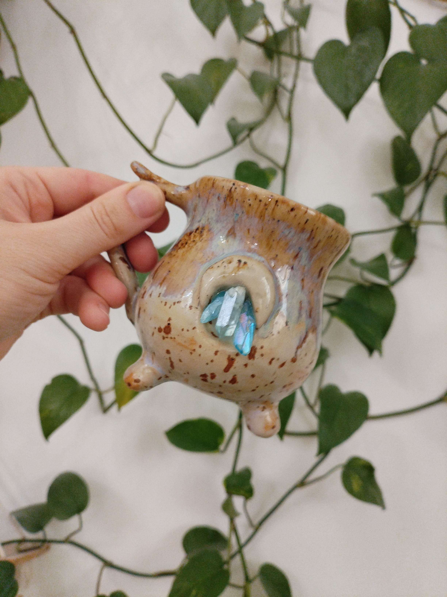

Коллекция начинается здесь

Кубок горного духа
Сосуд с кристаллом и лапками. Кажется, он шевельнётся. Артефакт земли и глубин.
от 12 000 ₽

Оберег Луны
Полумесяц с бирюзовыми кристаллами. Талисман ясности, спокойствия, сна.
от 14 000 ₽

Череп Перелесника
Древний символ лесной силы. Тёмный, тяжёлый, завораживающий.
от 16 000 ₽